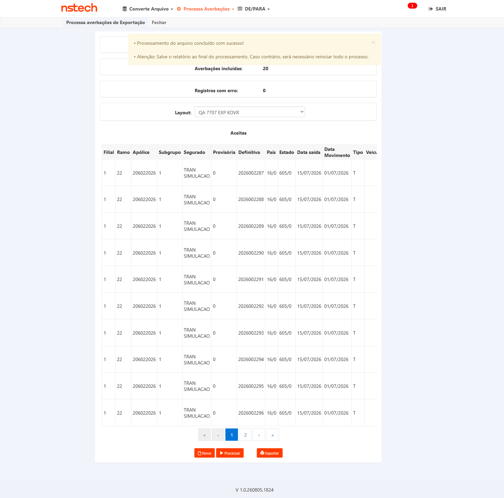
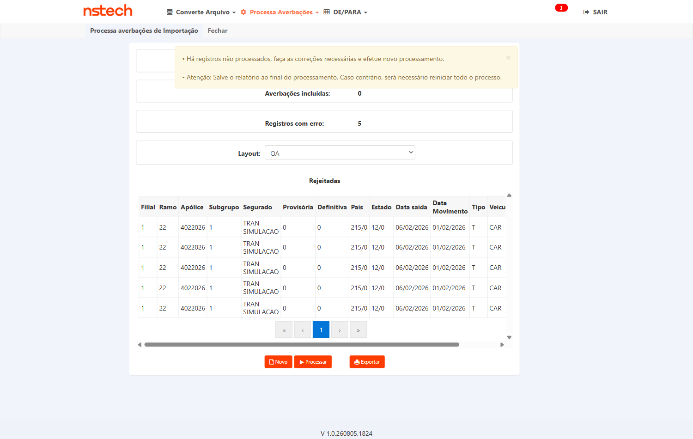

In scope: processamento do conversor de Exportação (ramo 32) com SqlBulkCopy sob Ind_Conversor_Processamento_BulkCopy: paridade funcional, performance, atomicidade, regressão (indicativo inativo), multi-seguradora.
Out of scope: etapa de Conversão; conversores Nacional/RCTR-VI/Importação; produção.
Pré-requisitos:
- Ambiente: CITWEB HML AXA —
ROT_AUTO / •••••• (senha no .env) - Fix de Exportação deployado em HML AXA
- Cotação USD (código 220) vigente — Tabelas → Cadastros → Cotações de Moeda
- Arquivo de Exportação com ≥ 7.000 registros + arquivo pequeno p/ smoke — massa gerada em 31/07:
exp_citweb_7500_7707.xlsx(7.500 registros) - Apólice(s) de Exportação AXA; acesso SQL HML p/ fila de pendentes e averbações
Grupo 1 — Processamento BulkCopy (funcional)
3▼Objetivo
Garantir que a Conversão (não alterada) segue funcionando após o refactoring do Processamento.
Passos
- Logar no CITWEB HML AXA
- Navegar ao Conversor de Exportação (rota validada na execução — ver Observação abaixo)
- Upload do arquivo pequeno + Conversão
- Confirmar conversão sem erro
Resultado Esperado
Ambiente: CITWEB HML · build V 1.0.260729.1115 · 31/07/2026
Obtido
Banner "Conversão do arquivo concluído com sucesso!" · Total 20 / Conversões incluídas 20 / Registros com erro 0 (idem no lote de 7.500: 7500/7500/0). Layout CARD 7707 - REFATORAÇÃO EXPORTAÇÃO.
Observação
Rota correta: CITWEB → tile Conversor de Arquivos (app=CONVERSOR) → Converte Arquivo → Exportação (/Conversor/Conversor?menu=ConversorExportacao). O layout da dev aparece normalmente para o usuário QA neste sistema.


Objetivo
Verificar que o processamento BulkCopy produz o mesmo resultado do fluxo linha a linha.
Passos
- Processar com indicativo ativo
- Anotar Aceitas/Rejeitadas
- Comparar com o mesmo arquivo em fluxo linha a linha (CT-CEX-007)
- SQL: conferir averbações gravadas
Resultado Esperado
Ambiente: CITWEB HML · build V 1.0.260729.1115 · 31/07/2026
Obtido
Banner "Processamento do arquivo concluído com sucesso!" · Averbações incluídas 20 / Registros com erro 0. Aceitas + Rejeitadas = Total em todas as execuções. SQL: definitivas 2026003769–2026003788 gravadas em tb_mov_avb_int_cit (IS total R$ 1.104.077,20); fila de pendentes drenada a 0.
Observação
Controller exercitado: ProcessamentoAverbacoesExportacao/Processar — o alvo do refactor.


Objetivo
Validar processamento de grande volume sem timeout — objetivo central do refactoring.
Passos
- Processar arquivo ≥ 7.000 registros
- Cronometrar tempo total
- Confirmar conclusão sem timeout + gravação das averbações válidas
Resultado Esperado
Ambiente: CITWEB HML · build V 1.0.260729.1115 · 31/07/2026
Obtido
Conversão de 7.500 em 148,7s (7500/7500, 0 erro) e Processamento em 191,5s — Averbações incluídas 7.500 / Registros com erro 0, sem timeout e sem erro de servidor. SQL: 7.500 definitivas 2026003789–2026011288 gravadas, IS total R$ 414.028.950,00; fila de pendentes zerada.
Observação
Massa gerada pelo QA alinhada ao layout da dev: exp_citweb_7500_7707.xlsx (25 colunas A..Y, sem cabeçalho).

Grupo 2 — Performance
2▼Objetivo
Medir throughput e comparar com o critério herdado do RCTR-VI (≥ 0,5s/registro).
Passos
- Processar (mesma apólice) e cronometrar
- tempo médio/registro = total ÷ nº registros
- Comparar com baseline produção Exportação e o critério
Resultado Esperado
Ambiente: CITWEB HML · build V 1.0.260729.1115 · 31/07/2026
Obtido
191,5s ÷ 7.500 registros = 0,026 s/registro na mesma apólice (1980). Critério herdado do #7471: ≤ 0,5 s/registro. Comparativo colhido na mesma sessão: 500 registros em 16–19s (0,032–0,038 s/reg) na AXA contra 0,074 s/reg na KOVR (indicativo inativo, gravação linha a linha) — o ganho do BulkCopy é visível no throughput.
Observação
Tempo cronometrado no cliente, do clique em PROCESSAR até o banner de conclusão.

Objetivo
Garantir que o BulkCopy não introduziu serialização/lock entre usuários (padrão CT-RVI-009).
Passos
- [Sessão A] processar arquivo A
- [Sessão B] processar arquivo B em paralelo
- Confirmar que ambos concluem sem travar
Resultado Esperado
Obtem_Proxima_Averbacao_Exportacao (e os métodos irmãos de
Importação e RCTR-VI) geravam o próximo número via SELECT MAX(u_avb_dfv)+1,
sem reserva atômica — e o BulkCopy introduzido neste mesmo card ampliou a janela
de corrida. Solução publicada em AXA e KOVR HML em 31/07 15:15.
| Rodada | Sincronismo medido | HTTP 500 | Integridade (por layout) |
|---|---|---|---|
| 1 | — | nenhum | 500 → 500 proc · 0 rjt · 0 sobra |
| 2 | 3 ms entre os cliques | nenhum | 500 → 500 proc · 0 rjt · 0 sobra |
| 3 | 15 ms entre os cliques | nenhum | 500 → 500 proc · 0 rjt · 0 sobra |
| 4 (métrica corrigida) | 31 ms entre os POST · sobreposição ~16,2 s | nenhum | 500 → 500 proc · 0 rjt · 0 sobra |
- Só havia handler de resposta, e o número era rotulado "Δ entre os POST". Media diferença de conclusão: 14.426 ms, que é exatamente |dur A − dur B| (21,9 s vs 36,2 s).
- Ao acrescentar o handler de requisição, peguei o primeiro POST
casando "Processa". Os
select_optiondos filtros fazem postback para o mesmo controller — então esse primeiro POST é um postback de filtro. Na sessão A o timestamp vinha 21,9 s antes do próprio clique, e o "Δ" de 18.424 ms era defasagem entre filtros. Cheguei a interpretar isso como "o barrier não funciona"; era o oposto.
pendentes_antes = processadas + rejeitadas + pendentes_que_sobraram. Qualquer
registro fora dessas três contas seria perda silenciosa. Fechou em 8 de 8 conferências
(2 layouts × 4 rodadas).
testes-automatizados/sprint-10/pbi-7707/ct_cex_005_006_concorrencia_atomicidade.py
(barrier ready/go por arquivo) + ct_cex_002_processar_exportacao_citweb.py
(instrumentação de rede).
Histórico — execução de 31/07/2026 (build V 1.0.260729.1115), antes do fix da #7960
Ambiente: CITWEB HML AXA · build V 1.0.260729.1115 · 31/07/2026
Obtido
Com duas sessões processando lotes distintos ao mesmo tempo,
exatamente uma delas devolvia HTTP 500 em
POST /Conversor/ProcessamentoAverbacoesExportacao/Processar, exibindo a página
"Ocorreu um erro inesperado!" e perdendo o processamento do lote; a outra concluía 500/500.
Reproduzia em 3 de 3 rodadas com sincronismo garantido — na rodada 3 os dois POST saíram a 50 ms de distância. A vítima alterna entre as sessões, o que descarta relação com um layout ou lote específico. Cada sessão leva 16–19s, ~o mesmo tempo do lote isolado (17,4s): não há serialização — elas rodam em paralelo e uma quebra.
| Rodada | Δ entre os POST | Sessão A | Sessão B | Falha |
|---|---|---|---|---|
| 1 | 1919 ms | HTTP 500 · 19.4s · erro inesperado | HTTP 302 · 17.9s · 500 incluídas / 0 erro | Sessão A |
| 2 | 1548 ms | HTTP 302 · 17.4s · 500 incluídas / 0 erro | HTTP 500 · 18.5s · erro inesperado | Sessão B |
| 3 | 50 ms | HTTP 500 · 16.5s · erro inesperado | HTTP 302 · 16.6s · 500 incluídas / 0 erro | Sessão A |
Contraprova: o mesmo lote, processado isolado, conclui 500/500 em 17,4s — o erro é da concorrência, não do lote nem do layout.
Defeito registrado na Task #7960 (filha deste PBI).
Observação
Método: a primeira medição disparava os dois processos "ao mesmo tempo" sem sincronizá-los — o que se media era a defasagem de login/navegação (chegou a 10s). Com barrier (cada sessão anuncia que está pronta no botão e só clica quando a outra também está) o defeito ficou determinístico. Stack trace não acessível ao QA — fica em LogErro31072026.txt no servidor. Script: ct_cex_005_006_concorrencia_atomicidade.py.


Grupo 3 — Atomicidade / Integridade
1▼Objetivo
CA crítico: exclusão do pendente só após sucesso do BulkCopy — em falha, nenhum registro removido sem insert persistido.
Passos
- SQL: anotar fila de pendentes antes
- Processar lote que dispare falha
- SQL: confirmar que os pendentes do lote permanecem (não excluídos)
- Confirmar zero averbação perdida
Resultado Esperado
Ambiente: CITWEB HML AXA · build V 1.0.260729.1115 · 31/07/2026
Obtido
Medido por contagem no banco, não por inferência: em cada rodada a fila é zerada,
convertem-se 500 registros por layout e, imediatamente após a falha de concorrência, fecha-se a conta
pendentes_antes = processadas + rejeitadas + pendentes_restantes para cada layout.
Resultado: perda zero em 6 de 6 medições (3 rodadas × 2 sessões).
Na sessão que recebe o HTTP 500, os 500 pendentes permanecem intactos em
tb_lay_out_cvr_tmp_act_int_cit com zero averbação gravada e zero
rejeitada — a exclusão do pendente não acontece sem o insert persistido. O mesmo lote, reprocessado
depois, conclui 500/500: recuperação integral.
Numeração: mais de 12.000 averbações geradas no dia nesta apólice, zero definitiva duplicada.
Conta consolidada das 3 rodadas: 0 registro(s) perdido(s).
Observação
Este CT foi validado com a falha REAL do CT-CEX-005, sem injeção artificial de erro — é o cenário exato que o CA crítico descreve. Uma leitura preliminar minha havia apontado 500 pendentes sem destino; o experimento controlado mostrou que aquilo era contaminação entre execuções sobrepostas na minha condução, não perda do produto.


Grupo 4 — Regressão
2▼Ind_Conversor_Processamento_BulkCopy INATIVO (confirmado por comentário do dev no card; mesma seguradora usada na regressão do #7471). Login CITWEB KOVR HML: ROT_AUTO / •••••• (senha no .env).Objetivo
Garantir que, numa seguradora com o indicativo desligado, o processamento mantém o fluxo linha a linha original — regressão zero. O teste é feito em outra seguradora naturalmente com o indicativo off, não desligando o indicativo da AXA.
Passos
- Logar no CITWEB KOVR HML (
ROT_AUTO / •••••• (senha no .env)) — seguradora com a flag desligada - Converter + processar um arquivo de Exportação
- Confirmar resultado idêntico ao comportamento anterior à PBI (gravação linha a linha)
Resultado Esperado
Reteste em 07/08/2026 · CITWEB KOVR HML · build V 1.0.260805.1824
Reteste de 07/08/2026 — o defeito de país da Exportação está resolvido
O fix da Task #8013 chegou à KOVR no build V 1.0.260805.1824. Retestei com a reprodução exata do defeito — mesmo layout QA 7707 EXP KOVR, mesma apólice 206022026, mesmo país destino 605/060 que recusava 20/20 em 04/08. Essa precisão importa: a evidência do dev em 05/08 usou outro layout e o país 203, e a própria autora registrou que "não é uma reprodução direta do bug original nem prova conclusiva".
| Rodada | Converter | Processar | Banco (oráculo) |
|---|---|---|---|
| Smoke 20 | 20/20 · 0 rejeitadas | 20 incluídas · 0 erro | definitivas 2026002287–2026002306 |
| Volume 500 | 500/500 · 0 rejeitadas | 500 incluídas · 0 erro | definitivas 2026002307–2026002806 |
Conferência em tb_mov_avb_int_cit (u_apo_pnc=206022026): 520 averbações gravadas, e a grid exibindo 605/0 em todas as linhas — nenhuma ocorrência de País 0 sem cobertura.
Ressalva de medição: o throughput desta rodada saiu em 0,756 s/reg, contra 0,074 s/reg medidos na mesma KOVR em 31/07. Não é regressão de performance — havia uma segunda sessão de browser rodando em paralelo na AXA durante a medição, o que contamina o relógio. Performance é escopo do CT-CEX-004, aprovado na AXA com 0,026 s/reg.

Histórico — reexecução de 04/08/2026, quando o CT estava reprovado
Mesma apólice (206022026), mesmo layout (QA 7707 EXP KOVR), mesma estrutura de massa que passou em 31/07. Resultado agora: conversão 20/20 aceita e processamento 0 aceitas / 20 rejeitadas, todas com a mensagem País 0 sem cobertura. Registrado na Task #8013.
Três medições separam regressão de massa minha:
- A massa está correta: a conversão gravou
DESTINO=605/60emtb_lay_out_cvr_tmp_act_int_cit— o país chegou íntegro à etapa seguinte. - O dado de cobertura existe:
tb_pas_gg_citna KOVR tem o país 605 comi_cob_pas='S'desde 2001 (e o 224, e o 203). - Contraprova: reenviei com país 224 (Paraguai/ASSUNCION). A grid de rejeitadas passou a exibir o destino
224/0— e a mensagem continuou dizendo "País 0". O valor validado não é o que chega; é um campo que ninguém preenche.
Mecanismo no código: ProcessamentoAverbacoesExportacaoController.cs:214 atribui o país ao objeto externo (processamentoAverbacoes.c_pas_irb), enquanto a validação lê o objeto interno (averbacao.averbacaoMovimentoInternacional.c_pas_irb, em ConsistenciadeDadosdeAverbacoesDomain.cs:670) — propriedades irmãs e independentes. O commit 0a6447731 (#7471 refatoração RCTRVI, 02/07) migrou justamente essa atribuição para o objeto interno no controller de RCTRVI e deixou o de Exportação para trás. Como Verifica_Cobertura_Pais começa com retorno = false e só vira true se achar linha do país, o país 0 reprova sempre.
⚠️ Leitura de mecanismo retratada no mesmo dia 04/08 — mantida acima só como registro do que foi publicado. O trecho descrevia um checkout local defasado; conferido depois em origin/hml (o ref que vai para HML), o controller de Exportação já atribui o objeto aninhado — processamentoAverbacoes.averbacaoMovimentoInternacional.c_pas_irb, hoje nas linhas 243/244, não 214 — por conta do commit 00dab0a0c (22/07, da Andreia). A causa real nunca foi código em origin/hml: era provenance de pacote, como registra o próprio título da Task #8013 ("build sem os commits 00dab0a0c/672675a66") e a correção de mecanismo no box do topo deste plano.
Resultado de 31/07/2026 (build V 1.0.260729.1115) — mantido como referência
Em CITWEB KOVR HML (seguradora com Ind_Conversor_Processamento_BulkCopy inativo): conversão 500/500 e processamento 500 averbações incluídas / 0 erro em 37,2s. SQL: definitivas 2026001787–2026002286 gravadas, fila zerada. Resultado funcional idêntico à AXA; throughput 0,074 s/reg contra 0,032–0,038 s/reg na AXA para o mesmo volume — coerente com gravação linha a linha.
Observação
Massa e layout criados pelo QA na KOVR (apólice 206022026, layout QA 7707 EXP KOVR). Os DE/PARA da KOVR exigem valores cadastrados para Complemento do Estado, País, Complemento do País, Mercadoria e Embalagem — código direto é recusado na conversão.


Ind_Conversor_Processamento_BulkCopy='S' em AXA, FAIRFAX e TOKIO; ausente na KOVR (linha inexistente = inativo, porque Indicativos.IsAtivo usa TryGetValue e devolve false quando a chave não existe).Objetivo
Solução escalável: aplicada a outra seguradora deve funcionar sem código específico.
Passos
- Ativar indicativo em outra seguradora com conversor de Exportação
- Processar arquivo de Exportação
- Confirmar paridade funcional sem ajuste de código
Resultado Esperado
E a prova está no banco, não só na tela: as definitivas
2026000001 e 2026000002 foram gravadas contra a provisória 20260002 com c_ori_tch=215 e c_dst_tch=12 — zero com país nulo ou zero. O 215 é exatamente o país que antes vinha zerado.
Procedência conferida por conteúdo (não por build): em
origin/hml, ProcessamentoAverbacoesExportacaoController.cs:244 e ProcessamentoAverbacoesImportacaoController.cs:248 têm a atribuição ao objeto aninhado — a segunda era a linha que faltava e que a Andreia corrigiu em 10/08.
⚠️ Três recusas de massa atrasaram este reteste, e nenhuma era o defeito: a única provisória da apólice 1980 estava consumida, vencida desde 10/03/2026 e com saldo -9.000. Criei a
20260002 e o teste rodou. Também foi preciso criar o layout QA 8013 IMP POS: o QA é mapeado por coluna de planilha (15 campos sem posição) e o QA 7681 IMP KOVR define País com 3 chars — estreito demais para o texto que o template exige (tipo 1, consistência DE/PARA). O DE/PARA traduzindo "ESTADOS UNIDOS" → 215 confirmou a leitura.
Histórico — o veredito de 07/08, quando a Importação ainda recusava
Situação em 07/08/2026 — KOVR (build 260805.1824): Exportação 500/500 ✓ · Importação 0/5 ✗ · AXA (build 260806.1708) sem exposição ao defeito de país ✓
Histórico de 04/08: FAIRFAX (build 260703.1628) 20/20 ✓ · AXA (build 260804.1125) 20/20 ✓ · KOVR (build 260804.1540) Exportação 0/20 ✗
Reteste de 07/08/2026 — metade do defeito caiu, metade continua de pé
O fix da Task #8013 chegou à KOVR no build V 1.0.260805.1824 e resolveu a Exportação (ver CT-CEX-007: 520 averbações gravadas, zero erro de país). O mesmo build, no mesmo tenant, medido no mesmo dia:
| Fluxo (KOVR · 260805.1824) | Conversão | Processamento | Mensagem |
|---|---|---|---|
| Exportação · apólice 206022026 · país 605 | 500/500 | 500 incluídas · 0 erro | sucesso |
| Importação · apólice 4022026 · país 215 | 5/5 | 0 incluídas · 5 rejeitadas | País 0 sem cobertura. |
Não é massa nem cadastro: tb_pas_gg_cit na KOVR tem o país 215 com i_cob_pas='S' (vigências desde 1980, 2001-01-01 e 2001-09-25). E a linha de base é forte — essa mesma apólice e layout gravaram 72 averbações em 20/07/2026.
Causa — o que está provado e o que não está. O que a medição prova é que o pacote entregue à KOVR corrigiu a Exportação e não a Importação. Não é código de origin/hml: conferi o ref que vai para HML (HEAD 32e93c8c3, 06/08) e lá os dois controllers já gravam no objeto aninhado — ProcessamentoAverbacoesImportacaoController.cs:248 (…averbacaoMovimentoInternacional.c_pas_irb = item.c_ori_tch;, com a atribuição externa comentada na linha 240, commit 672675a66 de 13/07) e ProcessamentoAverbacoesExportacaoController.cs:243-244 (commit 00dab0a0c de 22/07). Ou seja, o build 260805.1824 chegou à KOVR com o efeito do commit de Exportação e sem o de Importação — de novo provenance de pacote, não correção de código, que é exatamente o que o título da Task #8013 registra ("build sem os commits 00dab0a0c/672675a66"). A apuração de qual branch originou o pacote da KOVR segue aberta nessa Task.
Alcance delimitado — a AXA não está exposta. Medi a Importação na AXA (build 260806.1708): 0 incluídas / 20 com erro, mas a mensagem é Número de averbação (N) já cadastrado. — reuso de massa, não o defeito de país. Isso poderia ser inconclusivo (a duplicidade poderia curto-circuitar a checagem), e a ordem no código resolve sem outra rodada: a chamada de Consiste_Dados_Embarque_Internacional está na linha 367 e o "já cadastrado" na 561. As linhas da AXA chegaram à 561, logo passaram pela validação de país. O defeito está confinado à linhagem hml_fix.

País 0 sem cobertura.Histórico — primeiro: o motivo do bloqueio anterior estava errado, e por isso o CT ficou 4 dias parado
Eu havia registrado que o indicativo "é appSettings de deploy, não existe nas bases HML; o QA não consegue ligar nem ler". É uma linha de banco, em tb_ctl_sis_cit, perfeitamente legível por mim — a própria evidência que a Andreia anexou no card em 31/07 mostra a query dela: select * from tb_ctl_sis_cit where n_fun_sis like 'Ind_Conversor_Processamento_BulkCopy'. A resposta dela chegou às 18:24 de 31/07 e o CT continuou marcado como bloqueado por informação faltante; a informação já estava no card.
Histórico — execução de 04/08/2026 em três seguradoras (builds 260703.1628 / 260804.1125 / 260804.1540) e reexecução da AXA em 05/08 (260804.2006), tudo antes do fix da #8013 chegar à KOVR
Tudo o que vem abaixo desta linha — incluindo a tabela das três seguradoras, os dois boxes e a ev-grid — é o registro de 04–05/08, quando a Exportação da KOVR ainda recusava 100%. O veredito corrente do CT está no bloco de reteste de 07/08, acima.
| Seguradora | Indicativo | Build do Conversor | Conversão | Processamento |
|---|---|---|---|---|
| FAIRFAX (tenant novo) | S (10/06/2025) | 1.0.260703.1628 | 20/20 | 20 incluídas · 0 erro |
| AXA | S (29/09/2025) | 1.0.260804.1125 | 20/20 | 20 incluídas · 0 erro |
| KOVR | ausente (off) | 1.0.260804.1540 | 20/20 | 0 incluídas · 20 rejeitadas |
| AXA (pacote novo, 05/08) | S | 1.0.260804.2006 | 20/20 | 20 aceitas · 0 erro |
A AXA trocou de pacote hoje (1.0.260804.1125 →
1.0.260804.2006, deploy do fix do #8008). O monitor que deixei rodando
(_scripts/monitor_build_conversor.py) acusou a mudança às 12:36 e eu não assumi que estava
bom: reexecutei o smoke no build novo — 20 registros, 20 aceitas, 0 erros.
Por que isso é a evidência mais forte de provenance até agora: são
três pacotes do mesmo dia 04/08. O .1125 e o .2006 aceitam 20/20; o
.1540 recusa 20/20 — mesma apólice, mesmo layout, mesmo fluxo. Se a causa fosse código, os três
se comportariam igual. A diferença não está no produto: está em de onde cada pacote foi cortado. Isso soma ao
PR !1535 do Diego (05/08), cuja descrição registra que "o #7707 nunca foi promovido para
hml_fix".
A pergunta que fechava a Task #8013
naquele momento era uma só: de qual branch saiu o 1.0.260804.1540? Se fosse hml_fix ou
descendente, a ação seria republicar o pacote da KOVR — sem tocar em código.
Desfecho (07/08): foi isso mesmo — a KOVR recebeu pacote novo (1.0.260805.1824) e a
Exportação voltou a processar, 520 averbações com zero erro de país (CT-CEX-007). A #8013
não fechou, e por outro motivo: o mesmo build deixou o Conversor de IMPORTAÇÃO da KOVR recusando 100% — a Task voltou para To Do.
O que a FAIRFAX prova e o que não prova. Prova que o fluxo é genuinamente multi-tenant no que depende de configuração: montei do zero a massa de uma seguradora onde este card nunca rodou — apólice de exportação vigente, layout posicional próprio (os layouts EXP da FAIRFAX são por posição, TXT de largura fixa, não por coluna de planilha como o da AXA), DE/PARA local — e o par converter+processar passou de primeira, sem uma linha de código ou config específica. Não prova o código refatorado: o Conversor da FAIRFAX está no build de 03/07, anterior à task de dev deste card (#7845, concluída em 28/07). Vale como linha de base, não como aceite.
Por que o CT segue REPROVADO (situação em 07/08/2026). A Exportação foi corrigida na KOVR em 07/08, no build 1.0.260805.1824 — 520 averbações gravadas, zero erro de país (ver CT-CEX-007). Mas o Conversor de IMPORTAÇÃO da mesma KOVR continua recusando 100% no mesmo build e no mesmo tenant (0 incluídas / 5 rejeitadas, País 0 sem cobertura, país 215 com i_cob_pas='S'). Enquanto o pacote não roda igual nos dois fluxos, o CA de solução escalável não está atendido. Detalhamento e contraprova: bloco “Reteste de 07/08/2026” no topo deste mesmo CT e Task #8013 (em To Do).
Risco não materializado: a AXA trocou de pacote em 05/08 (
260804.2006) e seguiu 20/20; em 07/08, no build 260806.1708, continuava sem exposição ao defeito de país.


Reprodutibilidade
Massa FAIRFAX gerada por gerar_massa_exportacao_fairfax_txt.py (novo, arquivo posicional de 193 chars, apólice 1002200001926 · filial 1 · subgrupo 1 · saída 03/08/2026 · SP→CHINA). Os dois scripts de execução ganharam o tenant fairfax e o gerador de XLSX ganhou overrides PAIS_OVR/CPL_PAIS_OVR/ESTADO_OVR — foram eles que permitiram a contraprova do país 224 sem reescrever massa.
| Critério de aceite | CT(s) |
|---|---|
| Gravação via SqlBulkCopy quando indicativo ativo | CT-CEX-002, 003 |
| Tempo ≤ alvo p/ ≥7.000 registros (≥0,5s/reg) | CT-CEX-003, 004 |
| Paridade funcional (Aceitas+Rejeitadas) | CT-CEX-002 |
| Falha no BulkCopy → nenhuma averbação perdida | CT-CEX-006 |
| Indicativo inativo → regressão zero | CT-CEX-007 |
| Escalável/multi-seguradora | CT-CEX-008 |
CAs herdados do #7471/refinamento Andreia (mesma frente de refactoring). Card #7707 sem CA formal → derivados e a confirmar no aceite.
Histórico — riscos mapeados no planejamento (15/07/2026, card ainda em Pronto para desenvolvimento)
- Dev não iniciado (Alto p/ cronograma): na data do planejamento o card estava em Pronto para desenvolvimento — a execução dependia do deploy. Mitigação: plano pronto para executar assim que subisse em HML.
- Atomicidade insert+delete (Alto): risco de perda de averbação se a exclusão não fosse diferida. Mitigação: CT-CEX-006 bloqueante.
- Massa ≥7.000 registros (Médio): gerar arquivo grande de Exportação. Mitigação: mesma estratégia do #7471/#7681.
Situação em 07/08/2026: card em Pronto para deploy, os 8 CTs executados (7 aprovados · 1 reprovado). Os três riscos acima já foram endereçados — o de cronograma não se materializou (execução a partir de 31/07), a atomicidade fechou em 6/6 medições com perda zero (CT-CEX-006) e a massa foi gerada (exp_citweb_7500_7707.xlsx, 7.500 registros). Risco vivo hoje: a regressão de país no Conversor de IMPORTAÇÃO da KOVR — Task #8013 em To Do, que é o que mantém o CT-CEX-008 reprovado.